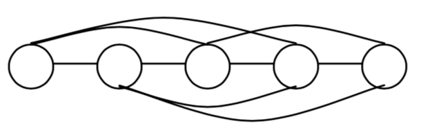

包含两个整数$k,n$，由一个空格分隔。$k$表示要将所有距离不超过$k$（含$k$）的结点连接起来，$n$表示有$n$个结点。
 Comet OJ
Comet OJ
最近，小栋在无向连通图的生成树个数计算方面有了惊人的进展，他发现：
这两个发现让小栋欣喜若狂，由此更加坚定了他继续计算生成树个数的想法，他要计算出各种各样图的生成树数目。
一天，小栋和同学聚会，大家围坐在一张大圆桌周围。小栋看了看，马上想到了生成树问题。如果把每个同学看成一个结点，邻座（结点间距离为1）的同学间连一条边，就变成了一个环。可是，小栋对环的计数已经十分娴熟且不再感兴趣。于是，小栋又把图变了一下：不仅把邻座的同学之间连一条边，还把相隔一个座位（结点间距离为2）的同学之间也连一条边，将结点间有边直接相连的这两种情况统称为有边相连，如图所示。
小栋以前没有计算过这类图的生成树个数，但是，他想起了老师讲过的计算任意图的生成树个数的一种通用方法：构造一个$n×n$的矩阵$A=\{a_{ij}\}$
其中$a_{ij}=$ $\begin{cases} d_i & i=j \\ -1 & i与j有边相连 \\ 0 & 其它 \end{cases}$
其中$d_i$表示结点i的度数。
与图相应的$A$矩阵如下所示。为了计算图所对应的生成数的个数，只要去掉矩阵$A$的最后一行和最后一列，得到一个$(n-1)×(n-1)$的矩阵$B$，计算出矩阵B的行列式的值便可得到图的生成树的个数。
$A=\begin{bmatrix} 4 & -1 & -1 & 0 & 0 & 0 & -1 & -1 \\ -1 & 4 & -1 & -1 & 0 & 0 & 0 & -1 \\ -1 & -1 & 4 & -1 & -1 & 0 & 0 & 0 \\ 0 & -1 & -1 & 4 & -1 & -1 & 0 & 0 \\ 0 & 0 & -1 & -1 & 4 & -1 & -1 & 0 \\ 0 & 0 & 0 & -1 & -1 & 4 & -1 & -1 \\ -1 & 0 & 0 & 0 & -1 & -1 & 4 & -1 \\ -1 & 1 & 0 & 0 & 0 & -1 & -1 & 4 \end{bmatrix}$
$B=\begin{bmatrix} 4 & -1 & -1 & 0 & 0 & 0 & -1 \\ -1 & 4 & -1 & -1 & 0 & 0 & 0 \\ -1 & -1 & 4 & -1 & -1 & 0 & 0 \\ 0 & -1 & -1 & 4 & -1 & -1 & 0 \\ 0 & 0 & -1 & -1 & 4 & -1 & -1 \\ 0 & 0 & 0 & -1 & -1 & 4 & -1 \\ -1 & 0 & 0 & 0 & -1 & -1 & 4 \end{bmatrix}$
所以生成树的个数为$|B|=3528$。小栋发现利用通用方法，因计算过于复杂而很难算出来，而且用其他方法也难以找到更简便的公式进行计算。于是，他将图做了简化，从一个地方将圆桌断开，这样所有的同学形成了一条链，连接距离为1和距离为2的点。例如八个点的情形如下：
这样生成树的总数就减少了很多。小栋不停的思考，一直到聚会结束，终于找到了一种快捷的方法计算出这个图的生成树个数。可是，如果把距离为3的点也连起来，小栋就不知道如何快捷计算了。现在，请你帮助小栋计算这类图的生成树的数目。
这样生成树的总数就减少了很多。小栋不停的思考，一直到聚会结束，终于找到了一种快捷的方法计算出这个图的生成树个数。可是，如果把距离为3的点也连起来，小栋就不知道如何快捷计算了。现在，请你帮助小栋计算这类图的生成树的数目。
包含两个整数$k,n$，由一个空格分隔。$k$表示要将所有距离不超过$k$（含$k$）的结点连接起来，$n$表示有$n$个结点。
输出一个整数，表示生成树的个数。由于答案可能比较大，所以你只要输出答案除65521的余数即可。
3 575【样例说明】
样例对应的图如下：

$A=\begin{bmatrix} 3 & -1 & -1 & -1 & 0 \\ -1 & 4 & -1 & -1 & -1 \\ -1 & -1 & 4 & -1 & -1 \\ -1 & -1 & -1 & 4 & -1 \\ 0 & -1 & -1 & -1 & 3 \end{bmatrix}$
$B=\begin{bmatrix} 3 & -1 & -1 & -1 \\ -1 & 4 & -1 & -1 \\ -1 & -1 & 4 & -1 \\ -1 & -1 & -1 & 4 \end{bmatrix}$
$|B|=75$
【数据规模和约定】
对于所有的数据$2≤k≤n$
【提示】
行列式的一种计算方法，记$\alpha (P)$表示$P$中逆序对的个数，令$B$的行列式
$|B|=\sum_{P=p_1p_2...p_n是1到n的排列}(-1)^{\alpha (P)}\prod_{j=1}^{n}b_{i,p_i}$
如，$B=\begin{bmatrix} 1 & 2 & 3 \\ 4 & 5 & 6 \\ 7 & 8 & 9 \end{bmatrix}$，则计算如下：
所以B的行列式为0-48+0+84+96-105=27。